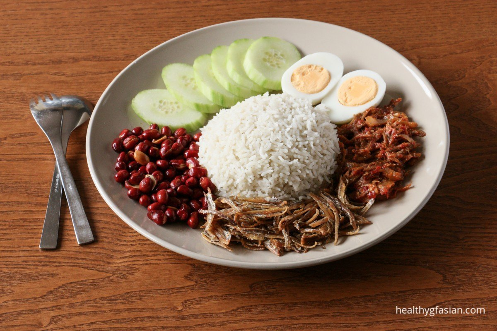

Takoyaki

Image source: Healthy gf
Asian
Description
Nasi Lemak is a traditional Malay dish that is considered the national dish of Malaysia. The name "nasi lemak" literally means "fatty rice" in Malay, referring to the use of coconut milk in the cooking process.
The dish typically consists of rice that is cooked in coconut milk and pandan leaves, which gives it a fragrant and distinct flavor. It is usually served with various toppings and side dishes, such as fried anchovies, peanuts, cucumber slices, hard-boiled eggs, and sambal, which is a spicy chili paste. Some variations also include meat or seafood like chicken, beef or shrimp.
Ingredients and tool
- 2 cups of rice
- 2 cups of water
- 1 cup of coconut milk
- 2 pandan leaves, knotted
- Salt to taste
- Optional toppings: fried anchovies, peanuts, cucumber slices, hard-boiled eggs, sambal, meat or seafood of your choice
Steps
- Rinse the rice in several changes of water until the water runs clear.
- In a pot, bring the water, coconut milk, pandan leaves, and salt to a boil.
- Add the rice to the pot and stir well.
- Reduce the heat to low and cover the pot with a lid.
- Let the rice simmer for about 18-20 minutes, or until the liquid is absorbed and the rice is cooked through.
- Remove from heat and let it sit for 10 minutes before fluffing up the rice with a fork.
- Serve the rice with your desired toppings, such as fried anchovies, peanuts, cucumber slices, hard-boiled eggs, sambal, and meat or seafood of your choice.
Note: You can adjust the amount of coconut milk and water to your liking, usually the ratio is 1:1 to get the creamy texture. You can also play around with the toppings to your liking, traditional toppings are hard boiled eggs, peanuts, anchovies and sambal.